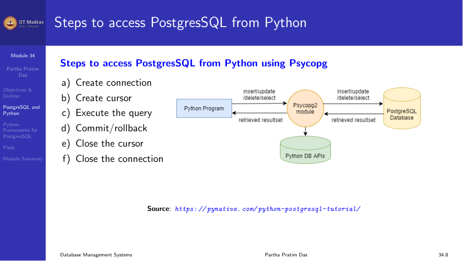

7.4 Building database applications with Python and PostgreSQL
Working with PostgreSQL and Python
Python has several modules to work with a PostgreSQL database. The most popular is psycopg2.
Advantages of psycopg2: - Most popular and stable module - Actively maintained, supports Python 2.x and 3.x - Thread-safe, designed for multi-threaded applications
Installation:
pip install psycopg2Steps to access PostgreSQL from Python
The workflow follows a standard pattern:
- Create a connection.
- Create a cursor.
- Execute SQL queries.
- Commit or rollback changes.
- Close the cursor.
- Close the connection.

Connection and cursor APIs
Connection
import psycopg2
def connectDb(dbname, user, password, host, port):
conn = None
try:
conn = psycopg2.connect(
database=dbname,
user=user,
password=password,
host=host,
port=port
)
print("Connected")
except Exception as e:
print(f"Error: {e}")
finally:
if conn:
conn.close()Cursor
Once connected, create a cursor to execute queries:
cur = conn.cursor()Execute
Execute SQL with optional parameterized placeholders:
cur.execute("INSERT INTO table VALUES (%s, %s)", (val1, val2))Fetch results
cursor.fetchone()— returns the next row.cursor.fetchmany(size)— returnssizerows as a list.cursor.fetchall()— returns all remaining rows as a list.cursor.rowcount— read-only attribute returning the number of rows modified, inserted, or deleted.
Commit and rollback
conn.commit() # make changes permanent
conn.rollback() # undo changes since last commitExamples
CREATE table
def createTable():
conn = None
try:
conn = psycopg2.connect(database="testdb", user="postgres",
password="pass", host="127.0.0.1", port="5432")
cur = conn.cursor()
cur.execute('''
CREATE TABLE candidate (
email_id VARCHAR(255) PRIMARY KEY,
first_name VARCHAR(100),
last_name VARCHAR(100)
)
''')
conn.commit()
print("Table created successfully")
cur.close()
except Exception as e:
print(f"Error: {e}")
finally:
if conn:
conn.close()INSERT
def insertRecord(num, name):
conn = None
try:
conn = psycopg2.connect(database="testdb", user="postgres",
password="pass", host="127.0.0.1", port="5432")
cur = conn.cursor()
cur.execute(
"INSERT INTO candidate (num, name) VALUES (%s, %s)",
(num, name)
)
conn.commit()
print("Record inserted successfully")
cur.close()
except Exception as e:
print(f"Error: {e}")
finally:
if conn:
conn.close()DELETE
def deleteRecord(num):
conn = None
try:
conn = psycopg2.connect(database="testdb", user="postgres",
password="pass", host="127.0.0.1", port="5432")
cur = conn.cursor()
cur.execute("DELETE FROM candidate WHERE num = %s", (num,))
conn.commit()
print(f"{cur.rowcount} row(s) deleted")
cur.close()
except Exception as e:
print(f"Error: {e}")
finally:
if conn:
conn.close()UPDATE
def updateRecord(num, name):
conn = None
try:
conn = psycopg2.connect(database="testdb", user="postgres",
password="pass", host="127.0.0.1", port="5432")
cur = conn.cursor()
cur.execute(
"UPDATE candidate SET name = %s WHERE num = %s",
(name, num)
)
conn.commit()
print(f"{cur.rowcount} row(s) updated")
cur.close()
except Exception as e:
print(f"Error: {e}")
finally:
if conn:
conn.close()SELECT
def selectAll():
conn = None
try:
conn = psycopg2.connect(database="testdb", user="postgres",
password="pass", host="127.0.0.1", port="5432")
cur = conn.cursor()
cur.execute("SELECT * FROM candidate")
rows = cur.fetchall()
for row in rows:
print(f"{row[0]} {row[1]} {row[2]}")
cur.close()
except Exception as e:
print(f"Error: {e}")
finally:
if conn:
conn.close()Flask web framework
Flask is a lightweight WSGI micro-framework for Python. It provides a convenient way to build web applications that connect to a database.
Installation
pip install FlaskSimple example
from flask import Flask
app = Flask(__name__)
@app.route("/")
def hello_world():
return "<p>Hello, World!</p>"
if __name__ == "__main__":
app.run(host="127.0.0.1", port=5000)A complete application with PostgreSQL
Consider the candidate table in PostgreSQL. The application provides: - A home page with links to add and view emails. - A form to add a new candidate. - A page to view all candidates.
index.html:
<!DOCTYPE html>
<html>
<head><title>Candidate Email</title></head>
<body>
<h1>Candidate Email Database</h1>
<a href="/add">Add Email</a><br>
<a href="/viewall">View Email</a>
</body>
</html>Python application:
from flask import Flask, request, render_template
import psycopg2
app = Flask(__name__)
def get_connection():
return psycopg2.connect(database="testdb", user="postgres",
password="pass", host="127.0.0.1", port="5432")
@app.route("/")
def index():
return render_template("index.html")
@app.route("/add")
def add():
return render_template("add.html")
@app.route("/savedetails", methods=["POST"])
def saveDetails():
conn = get_connection()
cur = conn.cursor()
email = request.form["email"]
first_name = request.form["first_name"]
last_name = request.form["last_name"]
cur.execute(
"INSERT INTO candidate (email_id, first_name, last_name) VALUES (%s, %s, %s)",
(email, first_name, last_name)
)
conn.commit()
cur.close()
conn.close()
return "Record saved successfully"
@app.route("/viewall")
def viewAll():
conn = get_connection()
cur = conn.cursor()
cur.execute("SELECT * FROM candidate")
results = cur.fetchall()
cur.close()
conn.close()
return render_template("viewall.html", rows=results)
if __name__ == "__main__":
app.run(host="127.0.0.1", port=5000, debug=True)add.html:
<!DOCTYPE html>
<html>
<body>
<h1>Add Email Information</h1>
<form action="/savedetails" method="post">
<table>
<tr><td>Email ID:</td><td><input type="text" name="email"></td></tr>
<tr><td>First Name:</td><td><input type="text" name="first_name"></td></tr>
<tr><td>Last Name:</td><td><input type="text" name="last_name"></td></tr>
<tr><td colspan="2"><input type="submit" value="Submit"></td></tr>
</table>
</form>
</body>
</html>viewall.html:
<!DOCTYPE html>
<html>
<body>
<h1>Email List</h1>
<table border="1">
<tr><th>Email ID</th><th>First Name</th><th>Last Name</th></tr>
{% for row in rows %}
<tr>
<td>{{ row[0] }}</td>
<td>{{ row[1] }}</td>
<td>{{ row[2] }}</td>
</tr>
{% endfor %}
</table>
<br><a href="/">Go Home</a>
</body>
</html>Summary
- psycopg2 is the standard Python module for accessing PostgreSQL.
- The workflow is: connect → cursor → execute → commit/rollback → close.
- Flask is a lightweight framework for building web applications with database connectivity.
- Flask handles routing, templates, and HTTP methods, so you can focus on the application logic and database access.